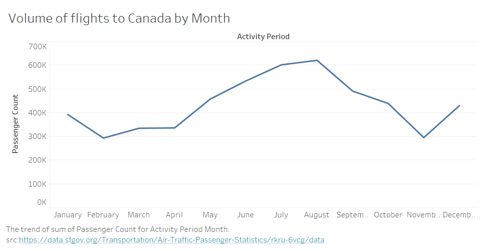

Line Graph
Tableau and d3 graphs
Home
Data
Visualizations
Line Chart
Area Chart
Bar Chart
Line graph and Tableau Visualization

Volume of flights to Canada by month
Data acquired from
data.sfgov.org
on February 7, 2020.